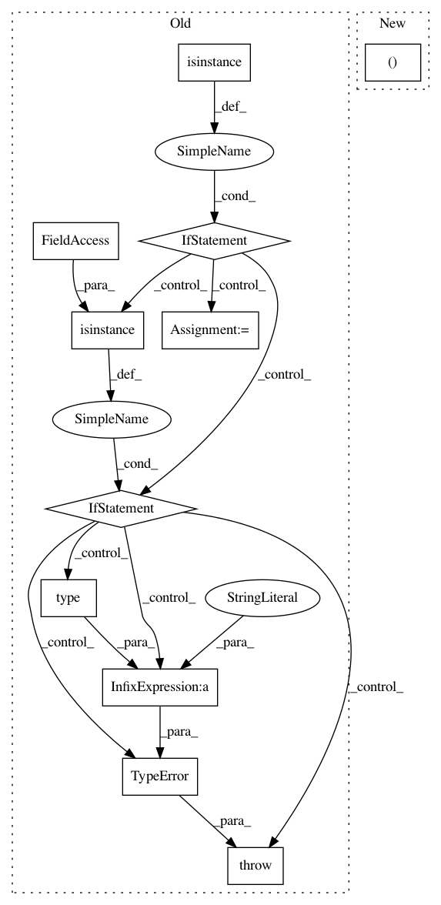

2321112716b7a5706732bb94edb2352cae9dad75,smac/facade/smac_facade.py,SMAC,__init__,#SMAC#Any#Any#Any#Any#Any#Any#Any#Any#Any#Any#,32
Before Change
if rng is None:
num_run = np.random.randint(1234567980)
rng = np.random.RandomState(seed=num_run)
elif isinstance(rng, int):
num_run = rng
rng = np.random.RandomState(seed=rng)
elif isinstance(rng, np.random.RandomState):
num_run = rng.randint(1234567980)
rng = rng
else:
raise TypeError("Unknown type %s for argument rng. Only accepts "
"None, int or np.random.RandomState" % str(type(rng)))
// initial Trajectory Logger
traj_logger = TrajLogger(
output_dir=scenario.output_dir, stats=self.stats)
After Change
runhistory = RunHistory(aggregate_func=aggregate_func)
// initial random number generator
num_run, rng = self._get_rng(rng=rng)
// initial Trajectory Logger
traj_logger = TrajLogger(
In pattern: SUPERPATTERN
Frequency: 3
Non-data size: 11
Instances
Project Name: automl/SMAC3
Commit Name: 2321112716b7a5706732bb94edb2352cae9dad75
Time: 2016-10-06
Author: lindauer@informatik.uni-freiburg.de
File Name: smac/facade/smac_facade.py
Class Name: SMAC
Method Name: __init__
Project Name: automl/SMAC3
Commit Name: 2321112716b7a5706732bb94edb2352cae9dad75
Time: 2016-10-06
Author: lindauer@informatik.uni-freiburg.de
File Name: smac/facade/roar_facade.py
Class Name: ROAR
Method Name: __init__
Project Name: analysiscenter/batchflow
Commit Name: 4c50261df4847bdfd7c8067307e8532f96d04104
Time: 2019-08-02
Author: Tsimfer.SA@gazprom-neft.ru
File Name: batchflow/models/torch/encoder_decoder.py
Class Name: EncoderDecoder
Method Name: decoder